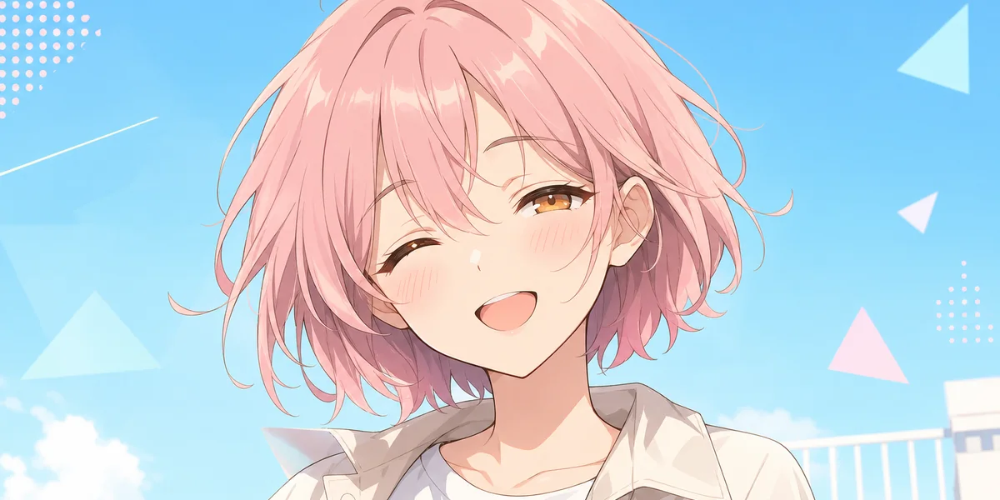
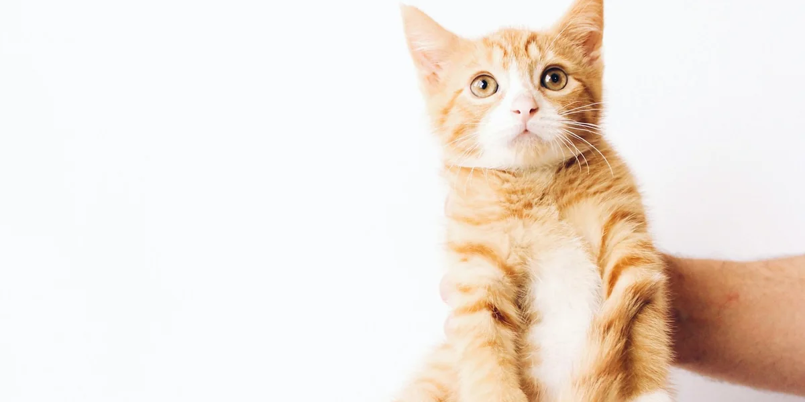

사진의 느낌은 그대로
원본의 주요 색감과 명암, 무늬를 단순한 도트 감성으로 다시 표현합니다.
사진 한 장이면 충분해요
사람, 고양이, 강아지, 좋아하는 사물까지.
원본의 색감과 무늬를 살린 픽셀 아트를 브라우저에서 바로 만들어 보세요.
PIXEL MAKER
이미지는 외부 서버로 전송되지 않고 현재 브라우저 안에서만 처리됩니다.
샘플 이미지 · 640 × 640px
WHY PICO DOT?
원본의 주요 색감과 명암, 무늬를 단순한 도트 감성으로 다시 표현합니다.
선택한 사진은 서버에 저장하지 않습니다. 모든 변환은 브라우저에서 끝납니다.
완성된 이미지를 PNG로 저장해 프로필, 스티커 아이디어, 개인 작품에 활용하세요.
HOW IT WORKS
표정이나 무늬가 선명한 사진일수록 특징이 잘 살아납니다.
도트 크기, 색상 수, 색감을 움직이며 원하는 분위기를 찾으세요.
미리보기를 확인한 뒤 고해상도 이미지로 바로 다운로드합니다.
PIXEL ART GUIDE
사진 선택부터 설정, 활용과 권리 확인까지 알아두면 좋은 기준을 정리했습니다.
사진 고르기
픽셀 아트는 작은 색상 블록으로 특징을 표현하므로 사람이나 반려동물의 얼굴, 털무늬, 사물의 윤곽이 분명한 사진에서 결과가 잘 나옵니다. 정사각형에 가까운 1200 × 1200px 이미지를 권장하지만 가로·세로 사진도 원본 비율을 유지해 변환됩니다.
설정 이해하기
완성 이미지 활용
다운로드한 PNG는 개인 프로필, 메신저 이미지, 반려동물 기록 카드, 다이어리 꾸미기, 스티커 제작 아이디어와 개인 창작물의 참고 이미지로 활용할 수 있습니다.
인쇄할 때는 이미지가 흐려지지 않도록 비율을 유지하고, 작은 스티커나 카드처럼 픽셀 형태가 잘 보이는 크기로 먼저 시험 출력하는 것을 권장합니다.
저작권과 초상권
본인이 촬영했거나 사용 허락을 받은 사진만 업로드해 주세요. 타인이 촬영한 사진, 연예인·캐릭터·브랜드 로고가 포함된 이미지, 타인의 얼굴이 담긴 사진은 저작권·상표권·초상권의 제한을 받을 수 있습니다.
PICO DOT은 이미지 변환 도구이며 원본이나 결과물에 새로운 이용 권리를 부여하지 않습니다. 특히 판매, 광고, 굿즈 제작 등 상업적 이용 전에는 필요한 권리를 직접 확인해야 합니다.
V1 TEST NOTES
PICO DOT v1에서 직접 확인한 기준입니다. 정답은 아니지만 처음 설정을 고를 때 출발점으로 활용해 보세요.

인물 사진
얼굴이 화면에서 크게 보이고 눈·코 주변에 빛이 고르게 들어온 사진이 안정적입니다.

반려동물
털과 배경색이 비슷하면 윤곽이 흐려집니다. 배경과 대비되는 사진을 골라주세요.
사물·풍경
선이 분명한 사물은 낮은 색상 수에서도 잘 보입니다. 복잡한 풍경은 도트를 높여보세요.
테스트 환경: 최신 Chrome·Edge 데스크톱 및 모바일 화면. 결과는 원본의 밝기, 초점과 배경 복잡도에 따라 달라질 수 있습니다.
YOUR PHOTO, YOUR DEVICE
PICO DOT의 변환 기능은 브라우저의 Canvas 기술을 사용합니다. 선택한 사진과 완성된 이미지는 서버로 전송하거나 보관하지 않으며, 페이지를 닫으면 브라우저에서 사라집니다.
개인정보처리방침 자세히 보기FAQ
현재 제공되는 사진 변환과 PNG 다운로드 기능은 회원가입 없이 무료로 사용할 수 있습니다.
아니요. 이미지 처리는 사용자의 브라우저에서만 이루어지며 서버로 업로드되지 않습니다.
피사체와 배경의 구분이 뚜렷하고, 얼굴이나 무늬에 충분한 빛이 있는 사진을 권장합니다.
본인이 권리를 가진 원본 사진이라면 사용할 수 있습니다. 타인의 사진과 상표는 해당 권리를 먼저 확인해야 합니다.